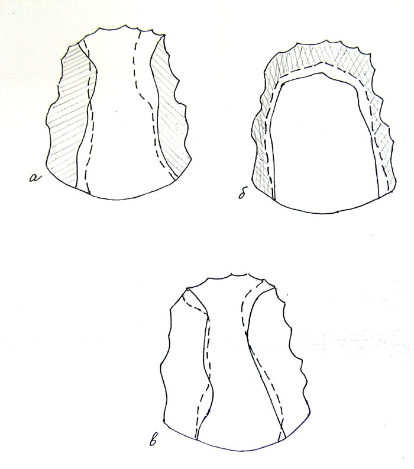

–ис. 44. ѕалатограммы русских звуков: а Ц гласный [i], Ц сильное произношение (площадь соприкосновени€ €зыка с небом заштрихована), -- слабое произношение; б Ц согласный [t], Ц сильное произношение, -- слабое произношение (площадь соприкосновени€ €зыка с небом заштрихована); в Ц [j] в сочетани€х [ja] Ц и [aj] Ц (по [Ѕогородицкий 1909]).
